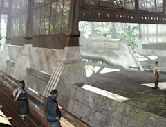
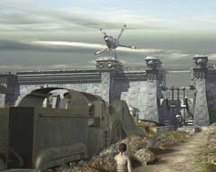

| 概要 | 地図 | |
| 淡いヒント集 | ヒント集 | 的確なヒント集 |
| 攻略最短ルート | Syberia 攻略へ |
|
演奏台の修理と機関車の移動2
水門を開き、船を移動することができただろうか? しかし、それだけでは完全ではない。 移動すれば分かるだろうが、機関車と船は離れた位置にある。 それでは、どうしたらいいだろうか? 簡単なことである。水門を閉じればいいのだ。ナビゲーションの内容を覚えていれば簡単であろう。先ほど入力したものと違うものを入力するだけである。

船を移動し終えたら、機関車と船をつなげなくてはならない。いったいどうしたらいいだろうか? 船員に相談すると、鎖でつなごうと提案してくる。鎖の先端と機関車をつなぐには、フックが必要となるだろう。もうすでにフックは回収しているだろうか?

機関車を移動し終わったら、ゼンマイを巻きに行くべきだろう。しかし、そんなあなたの元にポンス教授から電話が入る。 講義が始まるのだ。とりあえず、講義を聞きに行く方を優先しよう。 |
| 概要 | 地図 | |
| 淡いヒント集 | ヒント集 | 的確なヒント集 |
| 攻略最短ルート | Syberia 攻略へ |